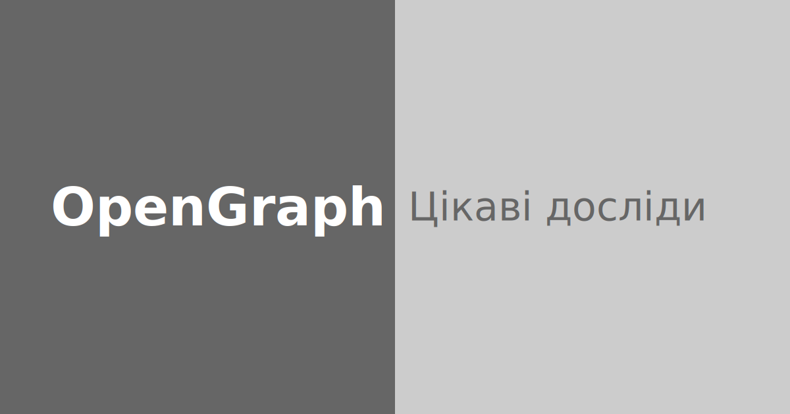

Маю ідею. Що як зробити десяток нескладних шаблонів у SVG, в стилі найбільш пришелепкуватих презентацій? Приблизно ось таких:

Для кожного поста в блог можна обрати один з шаблонів, змінити текст і кольори, і нагенерувати яких треба картинок в будь-якому розмірі.
Але всередині — текст, лише текст, нічого крім тексту.